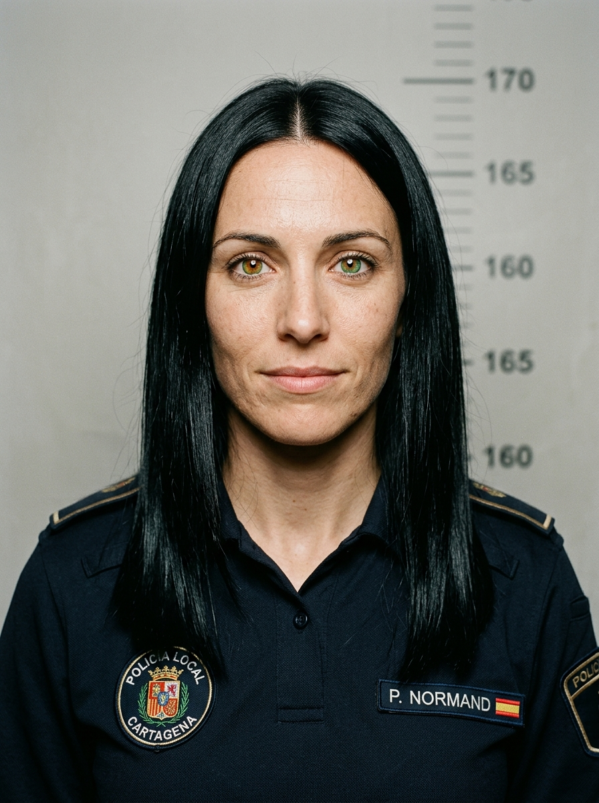
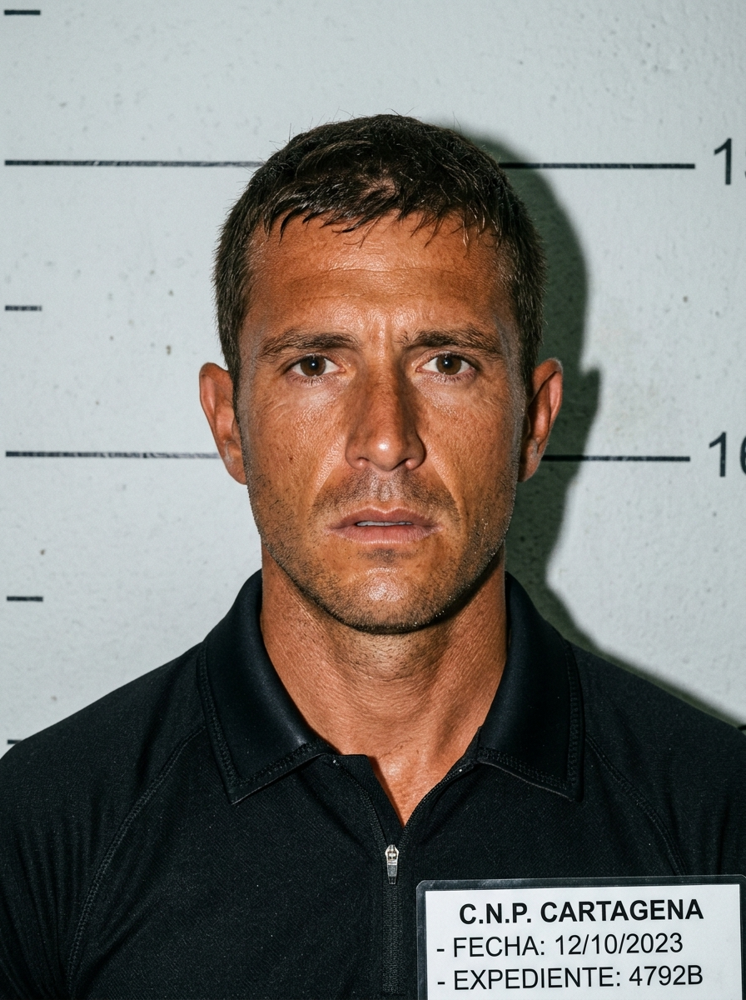

CARTAGENA. La tranquilidad habitual de un sábado otoñal en la histórica ciudad naval se vio truncada a las 06:45 horas de la mañana, cuando la Policía Local de Cartagena descubrió el cuerpo sin vida de D. Aurelio Saura Mengual, de 49 años, uno de los investigadores más destacados del Museo Nacional de Arqueología Subacuática (ARQVA).
El cuerpo, ataviado con equipo de buceo autónomo técnico para inmersión profunda, se encontraba flotando entre las rocas del espigón de Cala Cortina. Fue la agente de la Policía Local Patricia Normand quien, durante su ronda por la ensenada, advirtió la anomalía en el rompeolas y coordinó el despliegue de emergencia.
INTRIGA EN LA BOCANA. Fuentes portuarias confirman que el fallecido lideraba un estudio batimétrico sobre un pecio de época púnico-romana en el canal de entrada a la bahía, en la línea que une el Faro Rojo de Navidad y el Faro Verde de Curra.
Aunque inicialmente se barajó un fatídico percance por descompresión en solitario, el Juzgado de Instrucción número 3 de Cartagena ha incoado diligencias previas bajo secreto para determinar si las botellas de gas pudieron haber sido alteradas o si existió alguna colisión nocturna con embarcaciones en la zona de exclusión de la bocana.

31 años. Destaca por su agudeza visual, su profundo arraigo en Cartagena y su cabello liso muy largo y negro azabache, junto con ojos de llamativa heterocromía central (marrón avellana junto a la pupila con iris exterior verde). Fue quien descubrió el escenario y dirigió la instrucción del atestado.
Macho adulto bicolor (naranja y blanco). Residente habitual en las rocas y el espigón de Cala Cortina. Su insistencia al arañar la oquedad donde se ocultaba la cápsula de titanio de la cámara GoPro permitió rescatar la prueba reina del homicidio.
Investigador de reconocido prestigio internacional. Experto buceador técnico en circuito abierto y mezclas Trimix. Descubrió el expolio en el pecio Curra-II y confrontó a los responsables antes de su muerte.

Instructor de buceo profesional. Propietario del centro que cargó las botellas bibotella de la víctima. Posee una lancha semirrígida negra que opera habitualmente en la bocana.